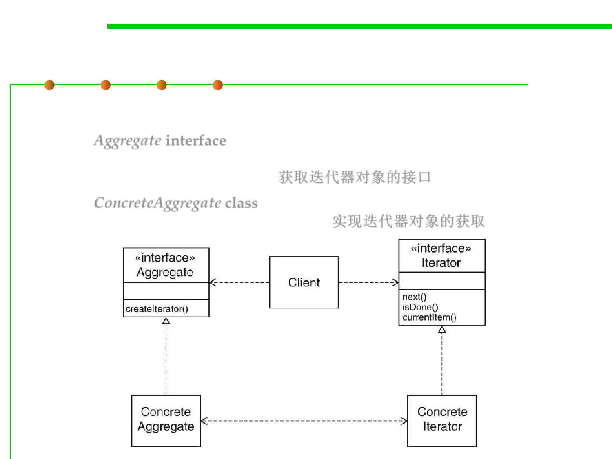

Iterator Pattern
5.3 Design Patterns for Reuse
▪ Pattern structure
– The Aggregate interface defines the methods for the client. The methods
that it defines allows the client code not to be bothered with the details on
how the collection is traversed. 获取迭代器对象的接口
– The ConcreteAggregate class implements the Aggregate interface and is the
class that creates the ConcreteIterator. 实现迭代器对象的获取